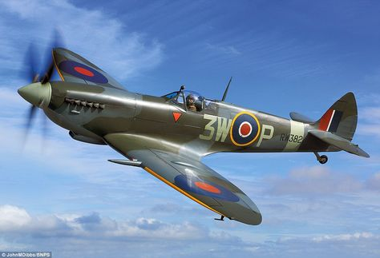
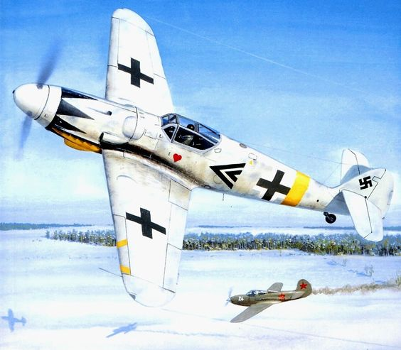
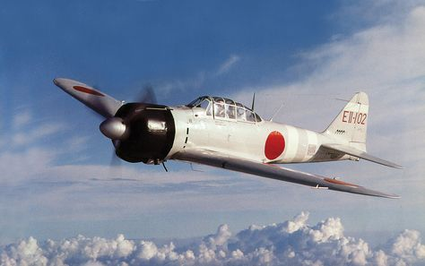
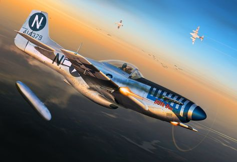
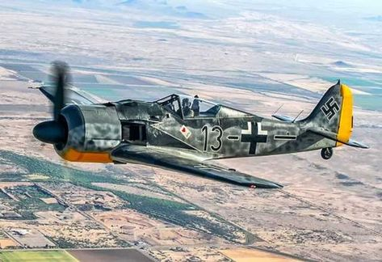
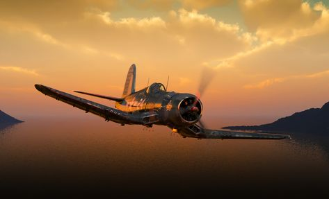
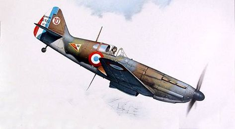
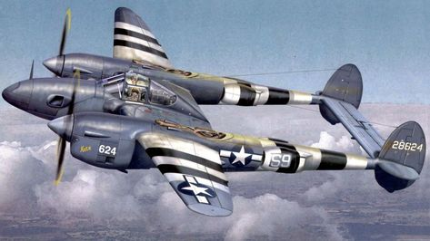

Le Republic P-47 Thunderbolt fut l'un des principaux chasseurs américains de la Seconde Guerre mondiale. Il est même l'avion de chasse américain le plus produit lors du conflit avec 15 660 exemplaires construits
Le Supermarine Spitfire (en anglais cracheur de feu, mais aussi au sens figuré soupe au lait ou mégère, d'où dragon également) est l'un des chasseurs monoplaces les plus utilisés par la RAF et par les Alliés pendant la Seconde Guerre mondiale.
Le Messerschmitt Bf 109 est un chasseur monomoteur monoplace allemand conçu par l'ingénieur allemand Willy Messerschmitt en réponse à un appel d'offres du RLM pour la conception d'un chasseur moderne devant équiper la Luftwaffe naissante en 1935
Le Mitsubishi A6M est un chasseur-bombardier japonais léger embarqué utilisé par la Marine impériale japonaise de 1940 à 1945.
Le P-51 Mustang est un avion de chasse américain conçu par North American Aviation. Utilisé lors de la Seconde Guerre mondiale, il est au départ développé pendant l'année 1940 pour répondre au besoin urgent de chasseurs supplémentaires de la Royal Air Force.
Le Focke-Wulf Fw 190 Würger est un chasseur-bombardier monoplace et monomoteur utilisé par l'Allemagne pendant la Seconde Guerre mondiale, entre 1941 et 1945
Le Chance Vought F4U Corsair est un avion militaire américain, utilisé lors de la Seconde Guerre mondiale et jusqu'en 1968.
Le Dewoitine D.520 est un avion de chasse français de la Seconde Guerre mondiale, réputé de nos jours comme le meilleur que la France ait pu aligner contre l'Allemagne lors de la bataille de France.
Le Lockheed P-38 Lightning est un avion militaire de la Seconde Guerre mondiale conçu par Hall Hibbard et Clarence Johnson pour l'avionneur américain Lockheed
pour retourné au menue ;)